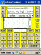

sCal & sCal2 - small, scientific, script Calculators |
_sCal

_sCal-p _sCal2
_sCal2
The sCal family of calculators is FREE and OPEN SOURCE. sCal itself is in the Public Domain. sCal2, its big brother, is under the GNU Public License--which is intended to keep it free (though 3rd parties can charge a reasonable fee for distribution costs). Anyone can make any modifications they want, need, and are capable of making.
sCal operates on several levels:1 - as a simple calculator: all the basic operators, in a small (~20kb) package, performing as expected from the bottom keypad.
2 - as a scientific and conversion calculator: with the additional functions selected from the 3 drop-down menus at the top.
3 - as a mini-programming environment: using the safe, relatively simple, and eminently portable JavaScript language.
All sCal needs to work is a competent browser environment.
• Microsoft Internet Explorer (Version 5 or 6);
• Netscape (Version 6) / Mozilla/5 (Version 1.1); and
• Opera (Version 7, including the 'Small Screen' view)
carry the load in Microsoft Windows Operating Systems (tested under Windows 98, NT, 2000,
XP).
• Pocket Internet Explorer ('PIE' Mobile version 2003)
has also proven capable with minor changes (mostly formatting for the small screen). Apple,
Linux, Palm and other systems have not been checked, though some output is expected.
----------
Copyrights and/or Trademarks for above products are the property of their
respective owners and are mentioned here, or in subsequent text and documentation, to assist
users in determining the suitability of their use is with sCal.
----------
sCal is intended to be used predominately offline. The WEB is just the common
denominator, and sCal is written in DHTML: common HTML + JavaScript (or JScript) + some
CSS. Any operating system/browser you're using to view this page has to deal with these
commonalities. If in doubt, click on one of the sCal small screens at the top of the page.
This will open, depending on which you choose, a copy of sCal or sCal-p (less
elegant on the desk top screen since its stripped-down for Pocket PC's) in a new
browser window. It would take as long to download a full-sized screen shot (also around 20 kb),
but that wouldn't show how sCal looks in your system, nor could you play with its
operation. If you do (and why don't you?) you'll find these additional features:
• easy install / uninstall- Just save the File where you want it. Delete it later,
if you wish.
• verifiable expression- completely viewable in the display before the [=] button is
clicked (or entered from the keyboard);
• short help notes- lnked in the title bar; and complete documentation if the
file is kept in the same directory;
• stop watch and count-down timer- available from the 2nd function menu;
• special functions- in the 3rd menu: basic financial calculations, together with
examples in Civil Engineering and programming versatility (branching & looping);
• script programmable- in JavaScript (with syntax like C or Java), including
ability to save useful algorithms to the source;
• source code = OPEN- to rearange the display, modify or add functions, for the
basic skeleton in JavaScript, with only a text editor--no need for an expensive or
complicated compiler (or multiple compilers for different platforms) and a compilation step;
• safe code- cannot be subverted to re-write your hard drive, or do other
malicious things (though you can always write an endless loop to freeze it up);
• slide rule- portability, swiss army knife utility.
sCal2 doubles the size (480 x 320 pixels, & variable) of sCal, while expanding its features exponentially:
• same basic functionallity- as sCal, on the left side of the calculator;
• cookies- to quickly revise the CSS (Cascading Style Sheet) settings;
• extra menus of menus- on the right side, giving easy access to hundreds of
functions and conversions;
• improved programming- with 20 more memory slots for input < prompts and
output > labels;
• programming examples- besides more in Finance and Civil Engineering as
presented in sCal: • Mathematics, • Materials, • Physics, •
Probability, • Statistics, • Data Management, • and even some very
simple games.
• -
• -
You cannot download sCal2 simply by clicking on the small screenshot at the top-right of this page. At 150+ kb of code, it is somewhat large, but, moreover, according to the constraints of the GNU Public License, sCal2 must be distributed with a copy of the license. The complete download, which includes sCal2, both versions of sCal, the complete documentation, the GNU Public License, Read-me file, and whatever else might come along, comes complete in a zip file of less than 100 kb.
In Summary the sCal family provides basic calculator operation in an exceptionally small package--especially sCal. At the high end, it is a structure to catalog, retrieve, invoke, and even create unlimited amounts of conversions and functions extending to the complexity of mini-programs (JScrAps: JavaScript applications supported by Input/Output procedures of a base structure, sCal).
This sort of power is intended for engineers and scientists and their students, though others will find it useful. It is not for the casual user, at least at its highest level. sCal's compromise is at the middle level. Common mathematical functions like Trig and Logs are not found on individual keys, but on drop-down menus which catalog all the advanced procedures. This saves space on the calculator face, but it costs an extra keystroke or two. On the other hand, those unconcerned with screen space can create those keys, or any others, by example of the existing code.
All Contacts and Downloads are handled through the SourceForge.net sCal & sCal2 Project Information Page http://sourceforge.net/projects/scal-2/. The 'Download' link also connects there. Oh, and was it mentioned? sCal-2 is Open Source: meaning 'Free' with a few relatively benign restrictions. That's along with over 57,000 other Open Source projects at SourceForge, so, once you're there, you may wish to click 'about sf.net' or 'software map' and check some out; or simply click the SourceForge logo at the top right.
| . WebPage . .Contents. |
Documentation: sCal & sCal2:small, scientific, script Calculators |
| .Back. .Contents. |
A nice screenShot of sCal would look good here. It would show how sCal looks on my screen in my browser under my operating system. It would also use up about 33-kilobytes in .gif format. But, if you click on one of the sCal or sCal, PPC images at the top of the WebSite, you can see how they look on your system, using only about 22-kilobytes from storage. You can also click on those buttons; and add, subtract, multiply, divide; convert units; do some trigonometry, logarithms, powers and roots; employ a stopwatch; perform a loan calculation; and a whole bunch more you might want to program for it in plain, old JavaScript. Try clicking the buttons on a .gif image to do that.
We'll be working some examples later on, and having a copy of sCal working next to this Documentation, (or on small-screened devices, having it to switch 'back' and 'forward') will facilitate matters. For now, we need to cover some geography on the face of sCal. (Yes, nomenclature is artificial, and maybe confusing since full explanations will not follow until later, but necessary for those explanations and describing the operation.)
The face of sCal:| Top Links: to Alert/Quick Reference boxes, and this 'Help' file
--------on PPC's, these links are right of the x-display |
| Comments: like 'Display-x', for info, no other purpose--can cut |
| Select drops: menus of functions or programs to call with [JS] or [Do]
---[Set 1: typically conversions] ---[Set 2: standard math. functions] ---[Set 3: special fcns, programs] |
| x-display: JavaScript expressions written to, output when [=,Enter] |
| m-display: calculator/stopwatch operation, sometimes computed output |
| Keypad:array of buttons for doing what calculators do |
And so sCal takes up less space and does much more than its picture. Its economical to build the documentation around the program and gives a new meaning to 'working examples'. {If your browser doesn't have the left cell of this table looking like a calculator, see Compatibility. CSS (cascading style sheet) settings at the top of the code, see Modifying, may be changed to overcome some problems--and even make the footprint as small as 200-pixels wide.}
Try it out. --R.Mohaupt : mgineer1@netscape.net --April, 2004
| . WebPage . .Contents. |
{This Documentation Version is DRAFT. It abounds in redundancies and inconsistent style, but most importantly, it covers version 0.8 of sCal and sCal2. There have already been significant improvements in version 0.9. And a minor change in direction. Development in the formats of what are now sCal and sCal2 will end (by this developer) with version 0.8. What is now sCal-p8 has become sCal-09.}
{The 2-celled sCal2 is a useful format, which I am reluctant to abandon. It has some nice features, but the format doesn't work well on the Pocket PC--which is the major excuse for sCal: transportability between the desktop, laptop, and hand-held, with no code rewrites. sCal-x (extended) will have different menu-management, handled, I think, by a large multi-dimensional array. JScrAps will be easily shuttled around in and between the 2 formats. Output will be composed in the Memory box (easy to copy/paste to a text file or a cookie) and displayed in Alert boxes (easy to code).}
{The time to upgrade 3 versions now, and checking through even the few platforms available, is too costly. Anyone else can continue the sCal2 line if they want.} R.Mohaupt, 18 Apr, 04
This Documentation provides some information about programming in HTML and JavaScript, but falls short of many, many references, tutorials, and examples available in print or on the Web. The classic References and User Guides for JavaScript are downloadable from Netscape, and for JScript from Microsoft, though any search engine can find more than anyone wants to know.
What commentary there is here is largly to show how sCal uses it, to assist others in modifying it. One doesn't need a great deal of expertice to do this. For better or worse, the code gives many examples to follow. Some abreviated documentation is also available by clicking the Top Links to Alert Boxes in the free-standing version.
A number of conventions, consistent with the operation of sCal, show how matters are handled:
| [1],[2],[JS],[Do],[x›m],[=,Enter], etc | - indicate screen buttons or, where applicable, keyboard keys to be clicked/pressed |
| {View}-{Source}, etc | - browser operations, by clicking or Alt-keyboard. Details differ with browsers. |
function Clear() |
- showing HTML or JavaScript code, as an example |
| I {feet>meter} [Do] | - selection from the top (I) catagory, (the middle is II, the bottom is III) of the feet to meter conversion and invoking it with the [Do] button |
| I=/*int.rate%/period*/ .5 ; | - comment prompt for program. User input (0.5 %) shown bold between */ & ; |
| . WebPage . .Contents. | - internal links, tho may use {‹-Back} and {Forward-›} in browser effectively |
The Simple Calculator
Go to the . sCal 0.8 . and link to either desktop or PPC versions.
(You can go 'back' and 'forward' between the program and documentation; or run sCal in
a separate, side-by-side window.)
*- click [2]; click [+]; click [3];
You will note that, unlike most simple, handheld electronic calculators, the entire
expression 2+3 appears in the ample display. You can confirm that you've
entered this earth-shaking wizardry correctly. (If not, you can clear it with the
[c] button and start over.)
Now click the [= Enter] button.
The x-display will now show the number 5.
Ok, this is not rocket science.
For the next grueling exercise, we assume that you are working on a desktop or notebook computer, with a keyboard. If you are using a PDA/Handheld PC, there should be some way of filling in a form. With so many differing platforms and navigation systems (jog wheels, 4- or 5-way buttons, stylus pen readers, and even mini-keyboards), there is no generalization to describe what you need to do to enter some numbers and symbols. We'll assume that you know your equipment well enough to perform the equivalent operations. (See section 1.6- PDA's.)
Click the cursor into the x-display. The 5 should still be there with
the cursor to the right of it. (If its to the left, you've clicked the cursor with
some skill to get it into the upper left corner. Use a navigation arrow to move it
to the right of the 5.)
Now use the keyboard to enter [-] and [3].
The x-display should now show 5-3.
Press the keyboard [Enter] key.
The x-display should now show 2.
You will have seen that sCal allows data to be entered, and evaluated, from either the built-in keypad or the computer keyboard (or whatever your system uses). You can mix methods according to convenience. Note that the keypad always appends numbers or operators to the end of the expression in the x-display, the keyboard inserts where the cursor is located. This makes the keyboard more useful for editing errors or changing values. The cursor must be in the x-display area for it to invoke the =/evaluation.
Elaboration. We're going to move on more quickly now. Unles otherwise
specified, only the expressins will be shown--they can be entered however the user
prefers. Clear the x-display.
Enter 8-6/2 and evaluate (click [=] or key [Enter]).
The answer is 5.
This is because sCal uses and algebraic precidence to determine the order that
operations are performed. Multiplications and Divisions are done before addition and
subtraction. Therefore 6 is divided by 2 to obtain 3, before it is subtracted from 8.
Hence, 5 is returned following evaluation. Doing things strictly in the order
that they appear, would have 6 subtracted from 8, resulting in 2. Then dividing 2 by
2 would have returned 1. Many simple calculators work this way. sCal operates
the way most scientific calculators work. It can be forced to do the operation in the
same order that a simple calculator would by several different methods:
*- enter 8-6, evaluate, then divide by 2;
*- (8-6)/2 --add parentheses, which have a higher precidence than [*] or [/];
*- enter 8-6, click [M+], then [M>x], then divide by 2
-- the [M+] evaluates the expression in the x-display before adding it to
Memory. This only works if there is nothing currently in Memory. Nothing has been
said about Memory until now, and its expected that you wouldn't have tried it yet. It
would be in its start-up state of 0. Nothing much more will be said of Memory
at this time either. The somewhat standard buttons: [x>m] [m>x] [m+]
and [mc](clear), work as common Memory functions.
*- 6-8, then [+/-], then divide by 2.
The first method is the obvious one and requires the fewest keystrokes. The last one is a trick, and purely illustrates the operation of the [+/-] button. It evaluates the expression before negating it. (Technically, it multiplies the x-display by negative one. Thus, an expression which evaluates to a negative number will become a positive one.) The [1/x] button also evaluates the x-display first, and then returns its reciprocal (1 divided by the value).
At this point, all the operator buttons on the keypad have been mentioned except for the [<](backspace) which deletes the last number or operator in the display; and the [^] button, which raises the expression to the left of it to the power on the right of it. Thus 3^2 is 3 raised to the second power, or 3 squared. Unlike other programming languages like BASIC, JavaScript does not recognize an exponentiation operator. Thus it is not open to automatic parsing by the eval() function, but is rather implemented by a method of the Math. object. Eg. Math.pow(3,2) is the code which performs the 3^2 expression. It becomes a bit complicated, so only one [^] operator is allowed per expression. This is sufficient for single regression models no matter how complex they might be. EG. 3*Math.PI^Math.sin(2.2)/3 is not a problem. Multiple regression will require the several uses of Math.pow(x,y). On the other hand, the simple operation of 3^2 could be done as easily by using the drop-down select default menu for x-squared.
The discussion grows far afield of basic operation, and will continue in the Advanced Section. But...
Summary: Basic operation of sCal is rather simple. The length of this section goes to showing that anyone passingly familiar with an electronic calculator (and who isn't) can do the simplest things. This is not where the power of sCal lies, though. There was a hint of this, which will be furthered in the next section about the stopwatch.
If you want to plunge ahead with the program(s) for a while, note that some abbreviated operating notes are given in links located at the top of sCal and sCal2 screens, and beside the x-display in the sCal-p layout. And if you read the comments in the source code, and experiment (as suggested), you'll probably find some unexpected results. For example, selecting an operation from a drop-down menu doesn't invoke it. There are buttons to choose for how to invoke it: directly, as a Script statement, or even as inverse. The x-display will not automatically clear when you want it to. That's because sometimes you don't want it to (eg. appending some script to the end of a function). 'Clear' buttons are programmed selectively for the x-, m-, and n-cells. Remember that some rather hefty books come with expensive programmable scientific calculators. Punching keys randomly will not accomplish much. But if you pay attention to what you're doing, and plan to do some clever things, sCal can be a useful addition to a practioner's tools.
| . WebPage . .Contents. |
The Timer - Stopwatch did not accompany version 0.6 of sCal and is new to version 0.8. It is potentially one of the most useful features of this version. As distributed, it is the second item in the middle drop-down menu. Start up a copy of sCal, if not open already, and try it out.
The second menu should now read *} Timer-Stopwatch. But nothing else happens. That is because sCal needs to know what you want to do with it. There are two options in the buttons on either side of the Menu line. [JS] puts the instruction code for the Timer-Stopwatch in the x-display, [Do] skips the display, and attempts to do whatever the code says to do. The distinction might not be clear right now, so the cue is taken from the *} in the function title. By convention, this means that there is some additional data expected. {If it was a x}, we would know that the expected data would come from the x-display. A s} and the display will just show some script, a string of data, instructions, or something on that order--no mathematical operations at all.) The safest thing to always do in any doubt (as if there were anything dangerous in making the wrong guess) is to hit the [JS] button. Do that.
Now, the x-display is filled with a lot of code--more in fact than can be viewed in the limited display area. These are the JavaScript instructions (code) that operate the Timer-Stopwatch. They read:
C=/*CountDown Seconds*/ 0; /* OR_leave_0_for_[=]_Start *-stopwatch/memory_functions: [x>m]_stop, [m>x]_'lap'time, [m+]_pause/go, [mc]_reset */ st0p=1; Timer=0; temp=x; runStop(0); x='Seconds:';
In JavaScript, a semi-colon indicates the end of a logical line of code, though not necessarily a physical line as printed; a comment is separated from executable code by a double slash, // if it runs to the end of a physical line, or, if it runs over several lines, the comment is inserted between the opener, /*, and the closer, */.
In this case, we see that C=/*CountDown Seconds*/ 0;. Since comments are ignored by the code, and only serve to enlighten the human reader of the code, the computer will read C= 0. We learn that the variable C is for countdown seconds. Reading further, we learn, if we fill in the abbreviated comment that follows, that we can leave C as 0, and press [=] to start the stopwatch/memory functions: which are apparently [x>m]_stop, [m>x]_'lap'time, [m+]_pause/go, [mc]_reset.
The rest of the code is all JavaScript. For now, we know that some variables (like C) are given initial values, a function called runStop is called with a value of 0 (in the parentheses), and x = 'seconds', a string of characters. It is of absolutely no importance to us at this time (or perhaps any time) what this means. They tell sCal how to do a timer-stopwatch. (Actually, the function runStop(0) calls some short but intense built-in functions. Most of the conversions and mini-programs in sCal call standard, resident JavaScript operators for if-then statements, loops, and Math methods, and are easily read. The timer is unique with special code. Later on, if you wish, you can dive into the code. At least, you'll be invited to do some more typical number-crunching functions a little later on.)
Operating the Stopwatch. Assume that you're not interested in trying the
count-down-timer right not, so there's not any sense in setting C to anything but the
default=0. (Now that we know this, we know that we can start start the stopwatch by
just clicking the [Do] button. Only the count-down-timer requires an initial C,
in seconds, to count down from.)
*- click [=] button or key [Enter]. Seconds, and decimal hundredths, will
start to zoom off in the memory box. NOTE: the Pocket version of sCal only displays to
even seconds. See 1.6- PDA's
*- click [x>m]. The stopwatch time is stopped in the Memory box, and total elapsed
time can be read. No big deal.
*- click [mc] to clear the memory/stopwatch. You're done. You can do something
else now. But...
*- click [Do] adjacent to the 'Timer-Stopwatch' bar, to start the clock again.
*- click [M+] to pause the stopwatch. You can see where the time stands frozen in
the memory box. Or ignore it, if you're only interested in a total net elapsed time.
*- click [M+] to resume the stopwatch where it left off. It can be paused and
resumed any number of times, if eg. you're editing together a number of bits of audio
files and are interested in the runtime of the finished product (not the time to edit the
bits), or timeing a football game (less the timeouts), or whatever suits. But that isn't
all. While the stopwatch is running, from any start:
*- click [m>x]. The current time is immediately sent to the x-display. Click it
again. The next 'current time' is sent to the x-display. And again. This is what is
commonly called a lap timer. Note that the stopwatch continues to run. The times of the
top 10 (or top 100) finishers in a race can be recorded. Individual operations of a
continuous industrial robotic process can be timed, with no starts and stops, and retained
for later analysis.
----------
Elaborations on saving data will come later, but a few words are in order now.
JavaScript has very safe code. You cannot write files directly to your hard drive with it.
But you can write any notes you want to into the x-displaly, and, with them or not, copy
the x-display to the clipboard, using utilities of the browser. A good clip manager will
save it from there, or you can immediately paste it to a text file. This is almost as
easy as any built-in 'save' function that could be written for sCal, without the
possibility of harboring any worms or viruses in the compiled code.
I personally doubt that there is a more powerfully featured stopwatch in such a size
and cost (free) as sCal provides almost incidentally. There is a price to the
count-down-timer however. To keep the code to a minimum, and give the most resources to
the stopwatch, the timer feature is somewhat short changed.
----------
Count-down-timer Operation. If you've been playing with the stopwatch, clear
the memory, and, with the *} Timer-Stopwatch still selected:
*- click [JS]. The code will return to the x-display.
*- click the cursor into the display just in front of the 0 as in C=/*...*/ 0
, and key in 1. This leaves the code as C=...10.
*- press [Enter]. The memory box will begin to count down from 10 seconds. When
it reaches 0, an alert box will report it with whatever chime your system provides.
*- click [OK] in the alert box, or just press [Enter] since [OK] is the
default, to clear the alert box.
*- click [=] again. Or, if you put the cursor back into the x-display, you can
use the [Enter] key. Since the code is the same, the same 10-second count-down
will be performend. This repeat function is useful in many cases, eg. a game like
"Boggle"(tm) where each round takes 60-seconds and the hourglass can get broken or lost.
*- click back into the x-display and change the 10 to 5-seconds. This
means getting rid of the original default 0, but it does no harm. You now have a
5-secind timer. Or you can make a 60-second timer, for soft-boiled eggs, or whatever
you need.
*- click [m+] while the timer is running. The countdown will stop as expected.
But, if you click again, it will not pick up where it left off. Repeated clicks will
stop and resume at strange places. As writ, the limited resources were devoted to the
stopwatch. It might have been useful to have pauses in the count-down, but it is not
workablenow. In its present form the count-down-timer is best left unattended. This
way it resists (or assists, if you're clever enough) cheating.
Future Features. At this time, I'm not that much interested in augmenting the timer functions, though someone might want to. It would involve some new code in the runStop(0) function, but there are perhaps enough "if"-statements now. A new, dedicated function might work better. A chess timer, keeping separate time for the 2 opponents could be done, though, limited to sCal2 with its large number of memory slots. Converting to minutes and seconds, or even hours, minutes, seconds might be useful for longer times, again, in sCal2.
| . WebPage . .Contents. |
The Basic Operation section discussed the lower part of the sCal calculator. This section will cover the upper portion--the higher level. If you've been skipping around this Documentation, you'll need to skim over the preceeding material on the Stopwatch since it contains some background on the selection and invocation of options (whether to use the [JS] or [Do]) button), and the interpretation of comments as prompts for data entry in the x-display.
Top Links. Before we look at the 3 drop down select menus in more detail,
the "Quick Reference" and "Help" routines need some attention. These are accessed by
clicking any of the 4 live links at the top of . sCal 0.8 .
You can go to the embedded calculator to view these, or use the links reproduced below,
to familiarize with what's available:
* sCal.8 -gives information About sCal
* Script -some generalities about JavaScript
* Calculator -barebones reminders about operation of the calculator
* Help -link to this Documentation file. This is external
to the sCal file, so it must be found. Keep it in the same directory (or folder)
as the sCal file, or be prepared to go into its source code and edit in the path
if you want to be able to call it from within the calculator.
----------
The first distribution version (0.6) of sCal had a cell below the
calculator body which contained some condensed information about the program and its
operation. This version replaces that with a bit more information in 3 Alert Boxes and
a lot more information in this Documentation, while trimming the footprint of the body.
----------
Drop-down Select Menus. Conspicuous below the Top Links are 3 sets of Select Menus. For ease of locating the desired function, they are categorized as follows for sCal2 -- though the user is not obligated to maintain this scheme: (The abridgement of sCal places some more common routines in the bottom set.)
| Position | # | General Selection of Function Sets | Default 'Do' |
| Top | 1 | Conversions and Constants | Math.PI |
| Middle | 2 | Core Disciplines: Mathematics, Physics, etc. typical of first 2 years of a technical degree | Math.pow(x,2) |
| Bottom | 3 | Specialized Areas in Engineering and Technology, typical of advanced or graduate study | Math.pow(x,0.5) |
Check what's available in the embedded sCal. Hopefully, I have chosen an adequate selection of conversions for the normal user. Since sCal is completely open source, you can add or replace some that you'd rather have handy. This is explained in the Modifying sCal section. Here we will go into the alternate operation of the selections.
With the default selection up, go ahead and click [Do] on the top (#1) set.
JavaScript's version of PI will appear in the x-display. My version shows 3.141592653589793. (I just copied it from the x-display and pasted it in here. Your version may show something slightly different.)
Click [C] to clear this, and now click [JS]. You'll now see Math.PI in the x-display. This is the JavaScript code which generated the numeric value. Click [=], and this code is executed. '3.14159...' appears. Yup. Math.PI = 3.14159.... And, you may be saying to yourself 'big deal'. But wait. Clear this code.
Enter 20 in the x-display. Lets say this is a Celsius temperature and you want to know the Fahrenheit equivalent. As luck would have it, sCal will do this for you. Find x}(temperature) C->F in set #1 and select it. Use [Do], and 68 (degrees F) comes up. Clear and try 212. This is in Fahrenheit. If you do F->C, you'll find its 100 degrees C. Hit [JS] to see the code. These are just a few options.
Select x}[length]. . inch->mm, the third item in the top set. Place 1 in the x-display. Recall that you can either click the [1] button, or, put the cursor in the x-display, and use the computer keyboard, to do this. Now click [Do]. And 25.4 is now in the x-display. That's right: 1-inch = 25.4 mm.
Clear the x-display and put 6.3 in it. Click [Do]. Now, 160.01999999999998 could (depending on your Browser's JavaScript implementation) appear in the x-display. This is admittedly disconcerting. You can clear the x-display if you wish, or simply click the [JS] button, to see the code 25.4*x. (If you haven't cleared the display, note that the JavaScript code is appended to the end of whatever is already there. This is to assist in the construction of more complex expressions.) By act of U.S. Congress, this is the exact conversion. So what's happening!!?
sCal-09 cures part of this problem by rounding to 8-decimal places. (This is user changeable with the Global var sC_xDec=8. It applies sparingly within the Oxf() function. It has its own problems with chained use, as small errors accumulate. The main Ox() does not use it, preferring to maintain the highest precision your browser can deliver, and let you make the ultimate decision of interpreting the results.
First of all, 160.01999999999998 is 160.02 (which is the precise answer). The world will be a safer place if you don't use JavaScript to try to calculate the orbits of potential killer asteroids. The base algorithms used by the typical implementation of JavaScript do not presume where you wish to terminate its itterations and round. sCal could be programmed to do this automatically, but the preference is to leave the user in the discretionary position. If this bothers you, you can select from set #2, the fourth item x}4-dec.places: round and click [Do]. You'll now see 160.02.
Better? Not as much as some would think. You probably only measured the original 6.3-inches to the nearest tenth of an inch. In conversion, it would not be legitimate to claim that you measured something to the nearest hundredth of a millimeter. Even a tenth of a millimeter is 0.004-inches. (I did this calculation in sCal.) Unless that 6.3-inches was 6.300-inches, measured with a micrometer, the answer you should probably return is 160-mm.
----------
This discussion has gotten a bit far afield, and will go no further into 'accuracy',
'precision', and 'significant digits'. But as a last illustration, try out the JavaScript
answer to the sine of 30-degrees. (Set #2, 5 down: x}op/hy,deg) . sin(x°) (which
has a reminder that the sine function is the ratio of opposite side to the hypotenuse of a
right triangle, and that the argument is to be in degrees. [Radians available in sCal2.]
You can enter the 30 in the x-display before or after you make the selection, just don't hit
the Do-button until its there.) 0.49999..etc is 0.5.
It is always the best course to carry out a series of calculations to the maximum precision
that JavaScript allows and then assess the final answer for what is appropriate to report.
Using some arbitrary rounding process along the way could result in some serious errors.
sCal allows you to control your own errors. More of this in the Design Philosophy
section.
-----------
On the web page of first release of sCal (vers. 0.6), I quipped that it was not for the casual user who just needed to calculate a restaurant tip or figure auto mileage. There are slicker calculators for that--some actually dedicated to these tasks. Well look at set #3, second item: *}miles per gallon{eg. Yeah, miles per gallon is miles divided by gallons. But I decided it might make a good example--hence the {eg at the end. Invoke this JScrAp with the [JS] button.
If you use the [Do] button you'll get an error message. Your browser will not likely make a major issue of this. Internet Explorer will display "Error on page." on the status line where it usually says "Done." Mozilla doesn't change at all. Nothing will appear in the x-display, you can still proceed with the calculation by using the [JS] button, and the numbers will be correct. For Internet Explorer, its probably not a good idea to go on indefinitely with the Error message. However subtle it is, it may be your only indication later on that something has gone wrong. You can easily clear this message by using one of the Top Links. Just call "Script" for example, click "OK" or press [Enter], and "Done." will be back on the Status Line.
----------
I prefer Internet Explorer's handling of this situation, rather than let non-fatal
errors pass without any indication (other than nothing happening). If you're using Netscape
/ Mozilla you'll see that the miles per gallon code is displayed running off the side of the
x-display so you have to use the horizontal scroll bar to enter the gallons. Internet
Explorer breaks the line and utilizes the height of the x-display. A vertical scroll bar is
used for longer code. Special formatting techniques can be used to overcome this "feature"
of Netscape / Mozilla. You'll see an improvement in the next example.
----------
Anyhow, (/*miles traveled*/ )/(/*gallons used*/ )+' mi/gal' will appear in the x-display when the miles per gallon JScrAp is properly called. Place the cursor between the end of the (/*miles traveled*/ commented prompt and the ) closing parentheses. Type in 55 there. That is the number of miles traveled. Similarly, after the gallons used */ type in 2. You've used 2 gallons while traveling those 55 miles.
Take a look at this now. Remember that whatever appears between the /* and */ are comments and ignored by the JavaScript interpreter. They are just there as a reminder to you the user of what goes where. So the code just reads the number of miles divided by the number of gallons. Press the [Enter] key (or [=] button). 27.5 mi/gal appears. Not bad if you're driving an SUV.
Yes, its pretty trivial, but a good example of how a mini-program works. In this case, its just the formula for doing what the name on the menu says it will, with comments to show you where to place what variables. Lets go on to something a little more difficult to remember.
Go to set #3 s} . . . . FINANCE . Click [JS]. There's just some text here: a little disclaimer that banks will work things out the way its best for them. The all caps 'FINANCE' serves as a separator in the menu. But its good information for what's next.
Go to set #3 *}Cap.Recov. loan pay. Click [JS]. For those of you (and
this includes me) who can't remember this little formula, what appears in the x-display is
why most of us don't.
I=/*int.rate%/period*/ ;
N=/*no. of periods*/ ;
P=/*Principal $*/ ;
/*[=] repay/period @m] eg: 9%APR (=0.75%/mo.) for 36mo, repay $10000 @ $318/mo.*/
i=I/100; y=Math.pow(1+i,N); m=Mr(P*i*y/(y-1),2)+'/prd.'; xRedo=1;
This is good form for a more complicated function. We see three variables: I, the interest rate, in Percent per Period; N, the number of periods; and P, the Principal amount. We see a /*[=] which is our signal that all the variables are accounted for, and we can do [=,Enter] once they're properly attended to, and repayment/period will appear at Memory following the calculation. We see an example of typical values; and finally the actual code that does the calculation.
So you're on the used car lot, looking at a model that you're going to need a loan of $10,000 to buy. That's the Principal. Your miserly bank will give you a 9% APR loan. You have your PDA along, with sCal loaded, so you call up the loan pay function. For this calculation (one could set it up otherwise, I just set it up this way) you need to determine the monthly rate, 9/12= 0.75% = the rate per period, monthly, since its monthly payments you'll be repaying. And you think that 36-months is right. So you enter these values. Note that the space between the */ and ) is nice and generous and that the 10000 dollars (or yen or pounds) is entered with no symbol or coma; and that the numbers, by strange coincidence, are the same as in the example. You click [=].
And the memory box reads 318/prd.. This is a bit steep for your current cash flow situation, and you know where the culprit is. You cage a 6% APR loan rate, and, with no need to re enter any of the other data, you can replace the 0.75 monthly interest with 0.5. Click [=] and the memory now reads 304.22/prd.. Not enough to make a difference. But you've got the first bank thinking now. For that same 9%, they'll let you pay back the loan over 4 years. You replace the 0.5% interest back to 0.75, and change the 36 months to 48. Click [=] and now its 248.85/prd. The best for your situation, you take it.
Just for fun, say you're rather flush, and are purchasing a "His & Hers" pair of automobiles. Go back to the original example of 0.75%/month for 36 months to repay a $10,000 loan. '$318/prd.' should appear in memory. You'll want to save that figure, but the memory register is being used to display the answer. Go to Set 2 and pull up x} . m -> TAPE and click [Do]. Now, for your partner, you generously provide a $12,000 car at the same rate. Remember, you only need to edit the $10,000 to $12,000. On [=], '381.6/prd' is now in the memory. Click the [Do] on Set 2 again, i.e. m->TAPE. Now, the two previous figures are on the TAPE--a virtual adding machine tape. You can go back to Set 2 and draw up the 'x} TAPE -> x' and [Do] that. The x-display will now show ' + 318/prd + 381.6/prd '. You can now add this up for the total payment but the '/prd' is a problem. You need to delete these out so that just ' + 318 + 381.6' are there. Then [=] . '699.6' is the total.
Had you preferred, you didn't need to draw up 'x} TAPE -> x'. The same result is given simply by entering 'TAPE' in the x-display. The x-display will then show the value of TAPE. The above example is stretching things a bit for illustration. But it is useful to avoid reentering numbers, and potentially miskeying something. You could, and in some cases would, paste answers to a Text file. (Recall that you cannot save to disk from JavaScript. But you can, and compose and save a documented report, in a Text file.) The Text file won't compute totals, though. (Note: To clear the TAPE, clear the m-display, then invoke m->Tape.)
This feature allows a series of similar calculations to be totaled. The classic example is a Present Worth comparison. The textbook problem is figuring whether the cheap machine with high operation and maintenance costs is a better investment than the more expensive machine with a lower O and M, all at a given time-value-of-money rate. The single payment cost is combined with the periodic payments. Another example in hydraulics is multiple channel elements carrying a flow.
----------
Putting the result in the memory box and setting the flag xRedo=1 in the code
has retained your previously entered values in the x-display, so all you needeed to do was make
changes. Compare this to the replacement in the x-display for the miles per gallon example.
Also the function Mr(....,2) set the output to 2-decimal places. These are programming
options. Its probably unnecessary that you know about them unles you do your own programming.
Otherwise you're stuck with what someone else thinks is cool. But just as a hint, you could
clear the x-display (if you don't, you'll have a whole lot of stuff in the x-display) and pop
that miles per gallon code back in it. And you can edit it right there. Try to put the mi/gal
in the memory box, and add the code xRedo=1. If you like it better, you can copy it and paste
it into the sCal source. Save that source, and its there for next time.
Also of Note: Financial Calculations work in either direction. If someone wants to
borrow $10,000 from you, you'd use the same function to check out the repayments he'd make to
you. sCal2 also offers a Loan Repayment function. It's located in Finance in set #2,
where it more properly belongs as a core discipline--but there was not room for them in set #2
of sCal. Having the array of n{0..19} extra memory boxes for input/output, the
implementation is much more robust. It can calculate periodic interest from APR, and gives
the total amount of interest paid.
----------
Finally, you may have noticed that the names for the functions are preceeded by a character
and curley brace, }, and that sometimes you should click the [Do] and sometimes the [JS] button.
Take a look at the previous highlighted "calls". There is a system of Typing which assists the
user in expecting what the code is looking for:
x} - the code operates directly on whatever is in the x-display, hence the x
*} - the code needs 2 or more variables to operate, a comment may prompt at */
s} - the code doesn't perform a calculation, its a string for instruction
!} - similar to 's}': denotes formal user documentation. (The JScrAp code has a
'!' as the first character, which instructs the sCal xWorks(s) function (called by the
[Do] buton) to display the code in an alert box.)
. . . . and if and when you ever get around to working with sCal2:
n} - the code uses the array n{0..19} for input prompt< / and output label>
. . . . use [Do], if you wish, on x} types. Occasionally others where sample variables are
set in the code. You can never go wrong with the [JS], if only just to check out the code.
After the Financial Functions in Set 3, you'll find some routines in Open Channel Hydraulics. For most people, this will just be an illustration of some obscure applications; for me, these are very useful routines--for those who know how and when they are appropriate. They are included for several reasons.
First, they show how some disipline specific formulae can be implemented--when they are probably available in this size format nowhere else. Secondly, at the other end of the JScrAp calls: '!} HYDRO ORIFICES', '!} HYDRO Manning', and '!} HYDRO n-values' show how a user can add documentation for the functions he adds. (The '!' at the beginning of JScrAp code, sends the text to an Alert Box.0
Last, its the sort of thing that I wrote sCal for. If you check them out, you'll see that the formulations are cumbersome to employ (especially that for normal flow in trapezoidal channels) and can use factors that are difficult to remember. That's what sCal does. It's not there to teach general or specific principles, though. There's a reminder at the end of 2 of the JScrAps.
Following that, more or less as an illustration of how flexible programming with JScrAps can be, is an ASCII code table generator. Its called by [JS], just to set a starting decimal. [=] puts the ASCII characters (those that are printable) in an Alert Box. The real point is to show code that employs conditional branching and nested loops. (ASCII codes aren't as important as they used to be.)
That's enough instruction for this section. You may want to play around a bit with the available functions: mix code you enter in the x-display with code you can call in fron the menus. sCal doesn't care where the code came from. You can paste it in from some other text file. Clicking [=] or pressing [Enter] causes it to deal with whatever is in there. Of course, sometimes its trash code. Use the [Do] repeatedly on a conversion and watch the number in the x-display grow, or dwindle, with each [=]. Experiment with the Memory. Put stuff in and out. Recognize that it will hold a lot more than what the box shows. You can even enter data into it directly from the keyboard. It helps if you do this with some purpose in mind.
| . WebPage . .Contents. |
Programmable calculators tend to have their own internal language, that must be learned by the user. sCal uses JavaScript. Given all the alternatives, it is reasonable to say that Javascript is not most people's favorite programming language. Nonetheless, it is relatively easy to learn and it should be the universal language of the WEB (with a collosal installed user base) and, therefore, a useful language for anyone with a complete web browser. No compiler is needed--no big learning curve to master the compiler and its interface, along with the programing language--just a plain text editor.
----------
Unfortunately, people who program JavaScript interpreters
have different ideas about how they should work. The language was originally developed by
Netscape. Micorsoft calls its version JScript. These are very similar, and the European
Computer Manufacturers Association has further established a standard (262) for ECMAscript.
But the field is competative and evolving. There are continual 'enhancemnts' from one source
or another, and those first to implement them are leaving out other or older systems.
sCal has tried to stick to the 'de Facto' standards of the most current and freely
available browsers: Internet Explorer version 5/6; Netscape ver.6/Mozilla ver.1; and Opera
ver.7. (Opera v.6 and sCal do not get along.) See section on Compatiblilty.
-----------
For 'standard' implementations, References and User Guides are available for JavaScript from Netscape, for JScript from Microsoft, and plenty of books and websites supply documentation, tutorials and examples. Any search engine can find more than anyone wants to know.
"Hello, World!", is a typical first programming example in many tutorials. This is an eye-opening chore for some programming languages. Assume you have a text editor, or, better yet, an Integrated Developemnt Environment (IDE) for the particular language already open. That's only fair--you already have an open copy of sCal. Assume further that your language is C/C++. You enter:
#include <iostream> using namespace std; int main() {cout<<"Hello, World!"; return 0;}
(Ordinarily this code would be stretched out over several lines for ease of reading in a standard layout. Here it is condensed for comparison.) You're not done yet. You now have to compile it before you can see the results. First you have to save it, giving it some file name, and introduce it to the compiler. But, if you are working out of that IDE, you can just invoke "Run" or something like that. (You'd have to learn how to operate your particular compiler--which, by the way, could cost you a lot of money. And you'd probably have to have several, one for each operating system you wanted to run this program on. And, it is likely that each compiler will have its own quirks for you to memorize.) In the end, you can have "Hello, World!" on the screen.
Now, put your cursor in the x-display of sCal. Type this code:
x="Hello, World!"
Click the [=] button, or key [Enter]. "Hello, World!" now appears in the x-display.
----------
O.K. this is a trick. 'x="Hello, World!"' is a JScrApp. JScrAps are just part,
or 'scraps', of complete JavaScript code. They don't need any Input/Output routines because those
are contained in the framework of sCal. * * (In case you're wondering, this may be the
first public use of the term JScrAps, or JScraps as it will be easier to read and write. As I use
it, which admittedly is a reach, it means JavaScript Client Resident Application per sCal. A
Google search on 31 December, 2003, found no reference to the term. Appologies to anyone with
prior claims. As far as I'm concerned, anyone can use it loosely to mean any JavaScript, or even
scrap of text, which performs useable work, but is incomplete by itself.)
In the end, if you needed to write "Hello, World!" to the screen, which is the easier way? In truth, C/C++ will do a whole lot more than JavaScript can. You could write a C/C++ program which would do the same thing as sCal does, and even more --though the user would not have easy access to it.
One of the shortcomings of JavaScript, or advantage if you're concerned about subversion in code so easily changed by any user, is that you cannot write directly to the hard drive. It takes a couple of extra steps to save a gem like the "Hello, World!" program. With the cursor in the x-display, do {Edit} - {Select all} - {Copy} - {View} - {Source} - {New} - {Paste}. Then, like any IDE, {File} - {Save as}. Count up the extra keystrokes/clicks. The overall programming/saving task is still much shorter in sCal.
The C-program is compiled, however, so in theory, it will run faster. With so short a program
the difference between the JavaScript intrepreter will be absolutely undescernable. And you
already have the JavaScript interpreter in your browser, which you probably got for free. Such
a program will also run on just about any modern system designed to access the World Wide Web:
Windows, Mac, Linux, whatever, with no necessity to recompile.
----------
Actually, you can do the above exercise by simply typing "Hello, World!" in the x-display and then presing [Enter]. The "x=" is redundant since x is what is in the x-display. Try this: enter "a=2; b=3; a+b". (When I write "enter", I mean type it in the x-display and click [enter]. Note also that the assignments, like other statements on the same line, are separated by semi-colons.) Now enter "a". That's right, we just assingned a=2. (Being able to check on the value of intermediate variables is a valuable debugging technique.)
The point is that what is in the x-display, and we may have called it a, is x. Clicking [=] or pressing [Enter], evaluates it, literally, by means of the function eval(x) built into JavaScript. The string (i.e. the line of characters) x, is actually run through a function called xEval() which processes it for the presence of the non-standard "^" power function, and some other twists. But, in the end, eval(x) does all the work.
The eval(x) Function is defined in the Netscape Client Reference as a "Top Level
Function"; and further, that:
The argument of the eval function is a string. If the string represents an expression,
eval evaluates the expression. If the argument represents one or more JavaScript statements,
eval performs the statements.
Microsoft Windows Script Technologies has this to say:
eval(codeString) Evaluates JScript code and executes it.
The required codeString argument is a string value that contains valid JScript code. This
string is parsed by the JScript parser and executed.
In other, looser words: eval(x) acts as an interpreter for the JavaScript interpreter.
-----------
Caution! x is treated as a string, no matter what you think it is. In
JavaScript, variables are loosely typed. That means that JavaScript will treat a variable as
a string, or an integer, or a floating-point real number, depending on how it feels about the
operation coded. Try this: enter "a='2'; a+b". Unles you've messed around with something
since the previous example, 'b' still equals the number 3, however 'a' now equals the 1-character
string '2'. If there's any way JavaScript can interpret a variable as a string, it may. And
JavaScript uses the '+' as a concatinator of strings. Hence a+b='23'.
The other operators '*', '/', and '-' do not suffer from this duality. Why the designers of JavaScript did this with '+' reflects some kind of character flaw (at least as seen by we who are "number-crunchers"). Other languages have used '&' to concatenate strings. The usage seems to have been borrowed from the C, where it did little harm since that language is strongly typed. One cannot add a string and a number.
Many JavaScript programmers avoid the use of the eval(x) function because it is relatively
slow. That's because it does so much. You will note (if you go into the source code. (hint))
that eval() or parseInt() or parseFloat() will usually clear up any problems by making sure
that all numbers are supposed to be dealt with as numbers, and not strings, if there is any
addition to be done. sCal usually takes the simpler step of dividing such expressins by
one. This remains a problem to be watchful for. When checking JScrAps, assume a range of
values, particularly if there is addition involved, and know what the answer should be.
----------
As previously stated, sCal doesn't care how the string got into the x-display: whether the user typed it in, called it from a menu, pasted it from a text file, or any combination. Working directly in the x-display is perhaps useful only for experimentation. JScraps should be incorporated in the source code of sCal itself. If you have not looked at the source code yet, why not?
You will see that the code is divided into its various portions by comments. The place
where the JScrAps go:
Top(FSET1) drop down SELECT menu:...
and, following a bunch of lines beginning with <option value=...
to a second, similar looking group:
Middle(FSET2) SELECT menu:...
and on to:
Bottom(FSET3) SELECT menu:...
These of course correspond to the 3 sets of functions described in the previous section and obvious on the face of sCal. If you write some code worth preserving, you first have to decide where it belongs. Then you have to place it in the format that will make it available for calling within sCal's structure. You will need to pay attention to the punctuation and HTML tags: '<' and '>'. These make the use of these symbols as arrows sometimes a problem. The Character codes which start with '&' and continue with 'lt;' and 'gt' (for less than and greater than). Follow the examples.
To make things easier (or more complicated), lets divide the designation of a JScrAp
into its descriptive parts:
Code - the part of the JScrAp that is placed into the x-display by [JS], or
just invoked by [Do] and evaluated
Call - the Calling part that appears in the drop-down Select Menu. This is further
divided into:
. . . . Type - 2-characters: "x}", or "n}" etc. assisting the user in identifying the
type of operation to expect, and
. . . . Name - 20- to 25-character name of the operation, which should be, within this
limited space, somewhat descriptive in what the code will do. Note that the code itself can
contain more detail of the process embedded in comments. Also, one cannot be specific about
the actual numbers of characters. What fits into the box depends on the number of 'i's vs.
'W's as long as a proportional width font is used.
And it goes like this:
<option value=" JScrAp Code ">Type} Call Name </option>
A nearly blank set, ". . . MISC." in set #3, and can be COPIED and PASTED where needed, and replaced with a real JScrAp. Become familiar with the sCal source code.
----------
The source code is purposely done in a condensed style--not usually considered a
good style. But it preserves some trees when printout. Even with a small font and narrow
margins, it consumes 6-pages. I'm one of those old guys who likes to make marks on the
printed page while trying to figure out what went wrong. And notes in the margins. And
arrows and a highlighter. And sometimes incantations.
----------
The making of JScrAps is what separates sCal from a large number of very nice calculators readily available for operating systems on all types of hardware. If you happen to develope any useful JScrAps that you'd like to share with others, you're welcome to present them to a forum at the SourceForge Project Page.
| . WebPage . .Contents. |
The newest generation of PDA's (Pocket Digital Assistants) are more powerful as computers than the first PC's (Personal Computers) were a mere 25 years ago. These systems are still recognizeable today, typically with a large box containing the CPU on a mother board, memory chips (a whopping 64 kilobytes or less), sound, video, and disk controller cards, a power supply and interfaces for other peripherals, among which were the inevitable video monitor and keyboard. If the display is a CRT and not a flat pannel, all this is around 90 liters (95 quarts) of volume. A PDA is around 0.15 liters, not to mention weighing a heckofalot less and not tied to an AC power source.
sCal runs on both--as long as each has a robust enough browser. There are minor differences, however. The regular arrangement of sCal is 24 kilobytes, that for the PPC is 20. The latter does not use CSS (Cascading Style Sheet) in the layout and has abridged Alert Boxes--brief help texts to match the smaller screen. Otherwise, they operate the same. Except....
The assumption is made that somewhere in the life of every keeper of a Pocket Digital Assistant is a desktop or laptop system. So, in the previous instructions, where it says "Click", you know it means "select" by whatever your PDA / Browser combination uses for the purpose: probably poke the screen with a stylus, i.e. tap the desired key.
This section concentrates on Pocket PC's operating under Windows Mobile version 2003. The version of Pocket Internet Explorer (PIE) what comes with PPC 2003 is probably the only Microsoft browser for the pocket/palm-sized format that is strong enoough to run sCal. The specific unit that sCal has been tested on is a ViewSonic V36 the one that comes with the camera, 64 mb RAM, and good recommendations from this writer. Other manufacturers may have other accommodations to PIE; you'll have to find those out for yourself. As for other systems, see the next section: 1.7- Compatibility Issues.
The first thing you'll notice with the reformat for the 240 x 320 pixel PPC screen is
that the 'Top Links' to the Quick Help alert screens and this 'complete' Documentation file
(if its in the same directory as the main program) is to the right of the x-display. There
are two reasons for this:
- even though a normal version of sCal can be worked in 240 x 320 pixels, the browser
window does not allow this much space. Moving the top line and eliminationg the table grid
lines and other intermediate lines keeps it in the window with potential horizontal
and vertical scroll bars. (You may also have to experiment with the text size to get
the best fit on your system. I.e. 'View' on the bottom bar -> 'Text Size'.)
- for some reason, PIE only allows a maximum of 19 columns to a textBox. This is slightly
less than 5-cell columns in the sCal layout. The 6th column would otherwise be wasted
if not used for the 'Top Links.' An [=] link is also added. This allows the
calculation to be executed while the keyboard is in use---covering the lower third of the
display, and sCal's keypad. (The actual width of the textBox is set for 21 columns
in the source code. It makes no difference to PIE, but it makes the layout better when the
PPC layout is run on a desktop.)
- when programming User Documentation (like the links to Alert Boxes from the right side of
the x-display), one can write '!}' JScrAp calls, with '!' as the first character of the code
so they too will appear in Alert Boxes. One of the Major differences between the desktop
and palm-top versions of sCal is the careful formatting of the text slated for these
boxes, due to their limited size.
Also, if you run the Stopwatch of Countdown Timer functions on the Pocket PC, you'll see
only seconds of time drag along. For another reason, the JavaScript (or more properly for
Microsoft, JScript) interpreter does no better than seconds; and expecting 1/100-seconds, as
the code returns on a desktop, or even 1/10-seconds, gives only flickers with the Pocket PC.
____________________
You can try to get 1/100-seconds on your system by altering the source code in the
function upDate() of the function runStop(k) code to match that in the regular
version of sCal. At the end of the 3rd line of upDate, change the 0 to
2, for 2 decimal places of output, and at the end of the 7th line, change the
1000 (representing 1000/1000-seconds) to 10 for 10/1000-seconds of 1/100-sec.
You will also note that the sCal-p version is specially designed, without a lot of
extra "style" used in the desktop version. The desktop version sCal will work on the
Pocket PC, though the CSS (Cascading Style Sheet) formatting doesn't take, and the layout is
stretched out, making it both unsightly and difficult to use. You'll find out, if you try,
that sCal2 doesn't work at all. The advanced features are mostly not implemented and
it is no longer able to perform the basic ones.
_____________________
Installation of sCal is as simple as transfering the file to the PPC unit (and this Documentation file if you wish to have it callable from the 'Help' Link). Invoking sCal may be a bit more interesting than from the desktop, however. PIE just wants to list 'Mobile Favorites' for running. You can run sCal by tapping the file directly (not a shortcut to it). The .htm or .html extension will run it in PIE. Henceforth it will be available in the PIE 'History'.
While running sCal, you can call up the Keyboard on the bottom line of PIE. It will come up automatically if you tap in the x-display. (You may have some other entry method set as default for entry. I suggest using the keyboard with sCal.) It is, after all, seeking text input in a textBox. It will only block the numeric keypad, and you can use the number '123' option to replace it. Unlike the desktop version, though, you will not be able to cause the computation to be made by tapping the Enter/NewLine key. The ASCII no. 13 captured on desktop machines does not capture thie key on the PPC. An [=] link has been placed to the right of the x-display along with the 'Help'-links, as a work-around, so one doesn't have to reduce the keyboard to reach the keypad [= Enter] button. (It makes things a bit crowded over there. {sCal-09 cleans this up, still...} I'd be obliged to anyone who could supply this key code.)
Finalllly, if you wish to play around with the source code inside the PPC, and you're using Pocket Word, be advised that you cannot change the name of the source while saving it as an .htm file. Pocket Word does not allow .htm as a save option. There are some inconvenient work-arounds which I messed with when I first tried its, and I've mostly forgotten after downloading a Free HTML editor. More of this in section 1.9- Accessory Programs.
| . WebPage . .Contents. |
In the Beginning of Personal Computing there was BASIC (Beginners All-purpose
Symbolic Language). It came with computer operating systems. Many times it WAS the operating
system. There was TI (Texas Instruments) Basic, Commodore Basic, BasicA (IBM), MBasic (CP/M);
GWBasic (MS Dos).... The list goes on. I know. I programmed in all the above, and more.
(Does anyone remember the Timex Sinclair?) The one thing all these BASICs had in common
was they were all the same except when they were different.
_____________________
It was, and still is, a good procedural programming language: an interpreter,
generally light-weight, and transportable, if you resisted the temptation to take advantage
of the special features offered by one operating system or another. Oh, you could get unruley
with it. I've written my share of thousand-plus-line applications of heaping spaghetti code.
I picked up a little disipline during a year with Borland Turbo Pascal in the mid-80's---
some would say it didn't take very well.
_____________________
It was the state of C/C++ these days. Except any technical person with minimal study could program small applications in BASIC faster and cheaper, that ran with no noticeable speed loss. "Porting" to a different operating system, in a similar way to C/C++, can vary from subtle to brutal. (JAVA. or something like it, may be the ultimate answer, but it still depends on uniform engine implementations, and requires an investment in programming expertice that technical people in other professions might better devote to their own fields.)
One would think that the single universality of computer use these days would be the World Wide Web. All systems need to look at the same Web pages, fill in the same forms, and otherwise fulfill commercial and informational needs. HTML and JavaScript should be the skeleton and muscle of this. The rest is skin and cosmetics. Maybe...mostly.
Those of us who use the language of the Web (OK, apologies to those whose English is not native.) to try to accommodate as many viewers as possible, generally have several browsers on their main machine; and find that they DO NOT give the kind of universality that one would have hoped--especially where tight size control is desirable. For example, as previously mentioned in Section 1.6: Pocket PC's, sCal2 looks terrible under the PIE browser, and, in fact, renders even the simplest calculations impossible.
If your browser doesn't render sCal similar to the the thumbnails at the top of the webpage incorporated in this documentation, and you're operating under System 32, then there's something wrong with your browser. Consider getting a new one. sCal has been tested on all sorts of Windows(tm) machines with Microsoft Internet Explorer, Netscape/Mozilla, and to some extent Opera. These are the versions of JScript and JavaScript that everyone else should be shooting for compatibility.
Windows® Systems using Microsoft Internet Explorer (versions 5 & 6) or Netscape (ver.6)/Mozilla (ver.2) Browsers have been checked for sCal and found to operate as expected.
Opera,ver.7 works with sCal, and has a 'View' to 'small screen' option. There are formatting problems with both, that the standard 'css' style does not handle. The 'small screen' option is particularly distorted. It reduces all elements to their minimum size for display on a small PDA screen. This is intended to reduce pages from the Web to a usable scale. sCal, which is intended for small screens, is not well-served by this. But, with about 20-minutes of work on the layout of the body (don't touch the JavaScript code in the head, unless you have some operational changes in mind) you can get it in a usable form.
Apple Mac: gee, I don't know. Most of the investment in CSS code was to try to accommodate this system, in any browser. Dimensions were given in pixels--also supposed to be the way of Linux, and sCal has less known experience with that. The brief look-see was disappointing. As I recall, the x-display was too narrrow, though it seemed to work with a few af the simpler JScrAps. It needs some tweaking, at least. Barring any major incompatibilities in the math, it 'should' work. After all, it has to deal with the same Web: display forms and allow users to make selections and provide information. As writ, I don't know.
PDA's are at least half the reason for writing sCal. Unfortunately, it appears that there are very few combinations of hardware/software capable of running it-- for now, at least. Claims made by manufacturers and publishers are often inflated as to capabilities for web-browsing. Small screens, limited memory, low band width, and web pages with no consideration for any of these possibilities, coupled with a large number of solutions to the problem of navigation and data entry (wheels, directional buttons, mini-keypads, touch-screens, etc.) have led to a variety of compromises in the industry. Little is standardized.
WML (Wireless Markup Language) Script hasn't the breadth to handle sCal. The current version will not accept many higher math functions (though float.pow(x,y), and branching & looping are supported--leaving some doors open, eg. trigonometric functions by series expansion as given in the 'Esoteric Math' section of sCal. Most important, WML lacks the eval() method. That is the heart of sCal. It's probably not worth exploring this since the trend is for increased speed and memory in PDA/Smart Phone units, and WML is likely to be one of those early attempts to provide some semblance of compatibility with desktop standards, which will be of historic interest.)
At the time of this writing (late in 2003) it is likely that Windows Pocket PC ver. 2003 (not 2002) with the latest version of PIE (Pocket Internet Explorer) and perhaps some other especially brawny browsers in either the Windows CE or advanced Palm operating systems, that claim ability to interpret HTML (with CSS) and JavaScript on a level with the most recent desktop browsers, is capable of running sCal. And then one can expect some tweaking necessary to give satisfactory operation. Those are the claims, anyway.
| . WebPage . .Contents. |
You have probably noticed by now that there are two basic types of code in sCal. The first type was explained in Section 1.5- Program in JavaScript. These are the names for and strings of code to execute the mathematical functions and conversions called in the drop-down menus. The second type of code is the structure of sCal, that which defines the layout of the calculator, how the buttons work, and some supplementary functions which can assist in programming (eg. the stopwatch functions or setting output decimal places).
One of the primary reasons for going into the sCal code is to change the appearance, either because you prefer some other color (don't like that yellow?) or keyboard layout; or, more seriously, the default size and fonts simply do not fit your device hardware, operating system, or browser. There are many variables here, which cannot be anticipated in the default selections.
sCal uses Cascading Style Sheet (CSS) technique for setting these variables
near the top of the Head of the code. Different elements are given "class" definitions:
.t1 -is the basic table. sCal is laid out in an HTML Table, with 6-columns.
By default, the background color is "yellow" and the width is 240 pixels. (All dimensions and
fond sizes are given in pixels as a common unit, and more predictable in outcome than points,
or "m"s, or whatever else.);
.b1 -are buttons of 1-column width, i.e. the keypad numbers, [JS], [m+], etc;
.b2 -is the 2-column slot: i.e. for the [= Enter] button and the Memory text box;
.d1 -is the drop-down, select menu boxes; and
.x1 -is for the x-display text area.
You don't need any special HTML editor to change any definitions. A plain text editor is available easily in most browsers. You should work from a copy, keeping the integrity of an original, downloaded version in another place, lest you mess up something critical. From a running copy of sCal, if your browser is MS IE5/6, click {View} - {Source}. The source code should appear in a new window of Notepad. You can make any changes you wish. Then click {File} - {Save as...} and enter a new name, if you wish. If you keep the same name, you can simply click {View} - {Refresh} and the changes will appear automatically. If you've changed the name, you'll have to close out the running version of sCal and then run the version with the new name, to see the changes. For Netscape6/Mozilla1, the operation is very similar, except click {File} - {Edit Source} to get at the source code.
------------
The previous assumes that you are running these browsers under the ms Windows O.S.
Even the same browser under a different operating system will give different results. On the
Mac, {View} - {Source} opens a view-Only screen. There may be another way to get to an
editor, other than opening the HTML code in an independent text editor, but I'm not familiar with
the Mac O.S. to give any authoritative advice. Throughout, this documentation assumes that it is
your system and your browser, and that you know how to copy files and use text editors and so
forth. I can only provide some direction, with some emphasis on JavaScript as it pertains to
sCal.
----------
The following is some sparse information on CSS options, if you choose to experiment with different schemes. This is a fraction of possible options, however.
STYLE & LAYOUT (defaults set for msIE6)
| 'background' & 'color' --- Basic Colors | ||
| hex. R-G-B-color | #-R-G-B -color- | #-R-G-B -color- |
| #000000 Black | #000080 Navy | #0000FF Blue |
| #808080 Gray | #008080 Teal | #00FFFF Aqua |
| #C0C0C0 Silver | #800080 Purple | #FF00FF Fuchsia |
| #FFFFFF White | #808000 Olive | #FFFF00 Yellow |
| many more, eg. | #008000 Green | #00FF00 Lime |
| #FFC0CB Pink | #800000 Maroon | #FF0000 Red |
| 'font-family' ---(most commonly available): | ||
| ----Windows---- | ----Mac/Unix---- | ----generic---- |
| Arial | Helvetica | sans serif |
| Times New Roman | Times | serif |
| Courier New | Courier | (fixed width) |
| 'font-style': Normal, italic, oblique | ||
| 'font-weight': | lighter, Normal, bold, bolder, | |
| 100, 200, 300,..,900 | ||
| 'font-size': | x-small, small, medium, large, x-large | |
| 8px, 9px, 10px, 11px, 12px, 14px | ||
sCal2 uses the same type of style designation, but it is implemented somewhat differently. Because some style elements can be changed by a cookie (invoked by the "Handling" top-link) the style is embedded in JavaScript, it can be changed dymanically. There are several more class types, also, so that button titles can be different colors. This type of handling can be transferred to sCal if you're willing to bloat the source code. This will be stated again, but it is worthwhile to write here: besides its enormous Script-string handling capabilities and data input/output advantage, it also serves as a repository for functions that can be placed in sCal if one finds certain of them useful, but cannot afford the additional screen space and code size of sCal2.
The Keypad Layout can also be rearanged to match that of a favorite calculator. The source code area is commented for this and the code itself is rather easy to identify since it is quite repetative. A little cutting and pasting should have it the way you want it very quickly. For the more ambitious, who have the screen space, an extra row or two of buttons could be added to call up frequently used functions or conversions.
Finally, Special Functions can be introduced which add utility to the user's
programming. Just as with any JScrAps you may develope that you're willing to share with
any other interested parties, you're more than welcome to put any enhancements of sCal
or sCal2 into a forum at the
SourceForge Project Page.
| . WebPage . .Contents. |
Though sCal is purposely designed to stand alone (with the requisite browser, of course) it is sometimes useful to have another program along side. Virtually all of current operating systems are multi-tasking, so there was no need to attempt to build some essential functions into sCal. Its going to depend on how you work.
----------
Herein I'll take the liberty to mention some other products. This is purely to assist
you, if you have no better idea of a starting place. Like most everyone else, I've looked
around on the Web, and tried out some--but not all. Be assured, that I am not associated with
anything I'll mention. I do this in the spirit of freeware. Sometimes it will just depend on
personal preferences. And sometimes, there actually are better programs. If you have some
cogent thoughts on these matters, the
SourceForge Project Page. would be a good place to share them.
By the way, I'm not going to check any links on a regular basis. Everything was good as
of the New Year, 2004. Addresses and facts are apt to change.
----------
Text Editor or Word Processor is a standard program. Besides the option of writing, rewriting, and cataloging JScrAps in a text editor, it can be run next to sCal (on a large desk- or lap-top screen) to copy/paste inputs and outputs directly into a report. This can document the calculation: where and what its about. This is the sort of thing that large programs automatically generate, once you've entered the where and what its about into that program. Things are less systematic the sCal way, but sometimes the big program is too unwieldy for the simplest things, and, sometimes, it doesn't exist.
Clearly the best text editor is the one you already own, and are used to. Its certainly superior to anything sCal would bloat itself with.
Clipboard Manager ... ClipCache
HTML/JavaScript Editor for any large scale code changes. WYSIWYG (What You See Is What You Get) Editors tend to fill your source code with a lot of extra junk. They're probably OK for a web page that's mostly text, but I believe that you'd have to have a pretty high-end edition to handle code that was intended for user tinkering. Hand coding isn't that difficult--especially if its only JScrAps. For this, editors like HTML-kit give some assistance and a aimple click for automatic preview in other browsers.
Screen Capture ... PrintKey 2000 by Alfred Bolliger and surely others.
{This section, is especially short-changed in the DRAFT Documentation. Those that follow aren't much better.}
| . WebPage . .Contents. |
"Double the Power" is something of a play on words. It doesn't mean like going from 5-horsepower to 10-horsepower. It means that if sCal is to the first power, sCal2 is to the second power, i.e. more like 10-times the ability. It comes with a price, though. The footprint is twice the size, but the code size bumps up from about 20-kilobytes for sCal to 150-kilobytes for sCal2 with plenty of room for more.
The key is that sCal2 has a second set of 3-drop-down Select Menus in the right cell. These introduce Catagories of conversions and functions. Thus, while sCal has only room for a few length conversions, among area, volume, temperature and limited others (though there's always room for another user-critical replacement or addition) in a single-drop-down, sCal2 opens a whole catagory of length conversions, and area, and volume, and other physical measurements, which can be transferred to the working Menus at the top of the left cell.
Note however, that sCal2-08 does not operate on the Pocket PC.
Getting sCal2: Only sCal, or the special format for the Pocket PC sCal-p, is linked at the top of the WebPage Introduction of this Documentation--mostly for download volume reasons. There are over 150-kb of code in sCal2, plus the distribution has to include a copy of the GNU Public License, and the propensity of some browsers to add a lot of "junk code" and reformatting to the source while it configures it for display. Its more efficient to deliver it all in a zipped package, and the code (tightly packed as it is) remains in good order for viewing. If you have a copy of sCal2, you should check out the operation of the expanded menu system. Remember, it is still the drop-down select menus on the left side which send their code to the x-display--for consistency with operation of sCal. And while you're at it, check out the vast amount of additional functions available. And know that much more user-programmabable space is also opened up.
| . WebPage . .Contents. |
Programming sCal2 JScrAps is not that much different than in sCal. There is just the additional step of working with the sets of drop-down Select Menus on the right side of the layout, if you're adding a new catagory.
The following paragraphs deal with the existing source code of sCal2. Source code is starting place of programming. Since there is less concern for the file size, there are more comments than in sCal. But there are never enough. Understanding the vocabulary seldom makes everything clear. It helps if you know what the code is trying to achieve.
Finding Code: Sub-menus are called by exactly the first 7- characters of the catagory name. The specific code in the HEAD is placed roughly in the order of Menu appearance, but it may be easier to locate by using the text editor's 'Find' function. These 7-characters can 'Find' the code area: sub-menu selections will be below the 'found', and additional strings to execute them (if any) are in the block immediately above it.
The best advice anyone can give is to review the source code. Some browsers can screw up the formatting (not that the original code is textbook style, compactness was chosen for printouts) so it may be best to look at it loaded directly to a plain text, or HTML editor, and it is suggested that a fixed-width font like Courier be used to take advantage of the way that sections of code are designated.
GENERAL: sCal is a scientific, programmable calculator form --predominately generated in HTML in a relatively short BODY of code at the end (approximately the last 20%, depending on how much additional code has been added). The HEAD contains JavaScript (JScript, ECMA std.262 Script, or JS) programming language. Therefore, one only needs a JS-enabled web browser (Microsoft Internet Explorer, Mozilla, Netscape Navigator, versions 5+, have been checked & provided for) to operate sCal, and a text editor (usually accessable within the browser) to modify. The HEAD has 4 commented purposes:
0. SET STYLE AND FORMAT OF CALCULATOR LAYOUT.
I. CALCULATOR OPERATION FUNCTIONS: Basic instructions to handle I/O (Input / Output) to the calculator form BODY. These are named Ix, Ox, Im, Om etc. {coding convention might have named these get_x, put_x, etc.} for I/O to the x-display, memory, etc. All areas of sCal can be modified by the user; however, special care should be taken in this area since so much other code depends on operation of these functions. The key function is "xEval()" which, after some checking for use of the '^' to take x to the y power, calls the JS "eval('string')" function.
II. MENU GROUPS WITH STRINGS OF JS SOURCE CODE: Operation of the menu structure is fairly simple: observing 'Catagory' drop- down menus in the upper-right cell of the Calculator BODY, to select 'Groups' of individual operations from the drop-down menus in the upper-left cell. Programming this requires some study of the included source examples. As in any coding effort, it is VERY important to mimic the location of commas, quotes, semi-colons, etc. exactly. More interesting and challenging is creation of JS-coded strings, often multi-line statements, to perform computational desires. These vary from the application of a simple factor (the majority of x}conversions do this) to somewhat elaborate mini-programs, identifiable by some dense string construction. The function "eval" expects a string of JS code. This is what appears in the x-display when the [JS] button clicked. Data additions in *}functions are made in the x-display. Code can be modified there, too. But for code modifications, or addition of new procedures, to become 'permanent', they need to be added to the source. Here one must keep in mind that STRINGS are being built. Single and double- quotes only provide 2-levels. Prompts in the n[0...19] array require another level, hence the supplemental strings of dense code appearing immediately before the Group Menu layouts.
A few comments are in order here:
* Operational Summary: sCal conventions suggest that the
following 'codes' be observed. (The program does not key on
these, but they give the user a hint of what to expect.)
x} in description, user click [>x] button to convert or
operate on value in x-display.
s} user click [JS] to view text (script) in x-display
*} click [JS], user seeks comment or other areas in text to
place or replace a value into a procedure, ->[=].
n} click [JS] to fill-in the n[0..19] array for the program:
prompt 'input <' means value to be entered in next column
label 'output >' designates the computed output to right
'_column_head_' may indicate that I/O values are below
* String Media: All Programs & Functions could have been built into sCal and skip the call to 'eval()' to interpret strings; however, that would be a different process from allowing the user to modify or creat new programming in the x-display.
* JS References: Many excellent books are available on the topic, as well as tutorials and code examples on the Web. Both Netscape and Microsoft have extensive (though not all-inclusive) Guides and References that can be downloaded. sCal contains only a sub-set of JS language elements--mostly listed in the JavaScript examples Group. Comments are provided, but there are never enough.
* Reliability: NO EXHAUSTIVE ERROR CHECKING HAS BEEN CONDUCTED! Some errors can be anticipated. Conversion factors and procedure output should be checked before relying upon the results. And, of course, the user is expected to know when a computation is applicable to the problem at hand. Tho some simple discussion and an example may be included in the string or an s}(script), there is no substitute for comprehensive knowledge and experience.
III. MENU POPULATION & PROVIDE LINKS TO DIALOG BOXES: A small set of variables and functions at the end of the HEAD, before the BODY, to provide settings for browser variable text size and default menu groups. sCal is set up to run properly with recent versions of Netscape, Mozilla, or Internet Explorer (trademarks of respective providers) in their default, out-of-the-box set- tings. If a user has made modifications, their impact on sCal is unpredictable. If unsatisfactory, some CSS instructions can be added, or direct code modifications made.
BODY: The running sCal calculator is divided in a 2x2 table. The cell boundries are clearly commented in the source code and can be compared to the visible form. HTML is in the order of appearance. Brief operating instructions are given in the lowest 2 cells. Experimentation and reading this source code are highly recommended.
| . WebPage . .Contents. |
It does well to reitterate what's going on with sCal:
| There is a basic skeleton to sCal: the sCal-eton of JavaScript code, for developing, cataloging, and retrieving conversions, formulae, brief documentation, and mini-applications programs, (all JScrAps); entering/editing data; submitting it for evaluation by the eval(x) function; and displaying the output. sCal includes the sCal-eton and a few of the most common JScrAps with some additional examples to show the possibilities of the package (and room to replace them with those of more import for a particular user). sCal2 provides a 20-celled memory-I/O array; and many more JScrAps through a tiered menu approach. These extra JScrAps provide access to many more disciplines; demonstrations (often experimental) of how some applications might be handled; and a repository of functions which could be modified and inserted back into a copy of sCal. |
There are a considerable number of JavaScript references in the sCal and sCal2 source code--more, of course, in sCal2. This is pointed out within the code, itself.
var JS_sCal="sCal uses a limited set of JavaScript language elements, listed following: ";
JS_sCal +="(Use the browser->source text->find '**JS** code element name' as shown below to ";
JS_sCal +="view (hopefully sound) example.) alert & prompt dialog boxes; navigator & ";
JS_sCal +="screen properties; cookie operations; {MATH} Math.E; Math.PI; Math.LOG10E; Math.abs; ";
JS_sCal +="Math.acos; Math.asin; Math.atan; Math.cos; Math.exp; Math.log; Math.pow; Math.random;";
JS_sCal +="Math.round; Math.sin; Math.sqrt; Math.tan; {STRING} eval(x); x.indexOf(; length; ";
JS_sCal +="x.substr(; x.substring(; parseFloat(; parseInt(; charAt; charCodeAt; .slice(; split;";
JS_sCal +=" toString; unescape; {MORE} appName; document.captureEvents; inform; onkeypress; ";
JS_sCal +=".options; onLoad; isNaN; {TECHNIQUES} interpolation; fact(q) {regression}; ";
JS_sCal +="{TIME} .getDate(); .getDay(); .getFullYear(); .getMonth(); .getTime; ";
There is a higher density of the '**JS**' tags near the beginning of the code where some common elements are first used. In some locations the tags are quite dense. The following is the layout for Set 2, menu--incorporating a lot of built-in functions:
var Ordinar_nA = new Array("('Ordinary Math x}. (x)^2','Math.pow(x,2)')",
"('*} Timer - Stopwatch',Time_Stop)",
"('x} . . factorial . . . x! ','fact(x) //pos integer assumed; Source in upper area of code.')",
"('(opp/hyp, deg.) . sin(x)','Math.sin(x*Math.PI/180)')", // **JS** Math.sin
"('(adj/hyp, deg.) . cos(x)','Math.cos(x*Math.PI/180)')", // **JS** Math.cos
"('(opp/adj, deg.) . tan(x)','Math.tan(x*Math.PI/180)')", // **JS** Math.tan
"('x} . degrees > radians','Math.PI/180 *x')", // **JS** Math.PI
"('*} Pythagorean hyp.','m=Math.sqrt(Math.pow((/*side1*/ ),2)+Math.pow((/*side2*/ ),2))')",
"('*} Pythagorean side','m=Math.sqrt(Math.pow((/*hyp*/ ),2)-Math.pow((/*side*/ ),2))')",
"('','')", // **JS** Math.sqrt (above)
"('(for deg.) . . arc sin(x)','Math.asin(x)*180/Math.PI')", // **JS** Math.asin
"('(for deg.) . .arc cos(x)','Math.acos(x)*180/Math.PI')", // **JS** Math.acos
"('(for deg.) . . arc tan(x)','Math.atan(x)*180/Math.PI')", // **JS** Math.atan
"('','')",
"(' . . natural log (base e)','Math.log(x)')", // **JS** Math.log
"('exponentiation: . . e^x','Math.exp(x)')", // **JS** Math.exp
"(' common log (bse 10)','Math.log(x)*Math.LOG10E')", // **JS** Math.LOG10E
"('anti-log(common)10^x','Math.pow(10,x)')", // **JS** Math.pow
"('','')",
"('Ty}JScrap Call Name',' JScrAp Code here ')", // **JS** JScrAp
"('','')",
"('*} Count Down Timer',TimCntDn)", // source code with Time_Functions
"('to 4-dec.places: round','Math.round(x*10000)/10000')",
"('x} . m > TAPE',TAPEplace)", // **JS** TAPE
"('x} . TAPE > x','x=TAPE')",
"('>Random Num. (0 - 1)','Math.random()')"); // **JS** Math.random
Some more code fragments are lifted from the sCal2 source and inserted below. Full context can only be obtained in the actual code. Standard Language elements are in bold. Those in plain text are defined in sCal only, but are included as they are useful in JScrAps developed for sCal.
var Browser = navigator.appName.substr(0,9); // **JS** substr(start,#ofChar)| . WebPage . .Contents. |
| . WebPage . .Contents. |
2.3.x Graphing: sCal2 provides some limited graphing capability. The x-display, even at 'Normal' dimensions, is only 255(width) by 72(height) pixels. The 'Function Grapher', found under II-JavaScript Samples uses the n[0..19] array to show how the sine function can be rendered in a very sketchy form. This is not very satisfactory, either. Opening a new window can provide better results. This could be implemented by writing some special code.
With commercial programs, that's a sign to get to work. But in the freeware rhealm, that's a sign to start searching. It should be axiomatic that one shouldn't write code that someone has already spent the time on, differently than one would have done it, but very likely better.
Graphing and diagramming can be accomplished through various Java applets (which raises even more campatibility issues, though jgraph would be a good place to start) or through some clever JS coding. A Google search of 'JavaScript graph' on the Web finds a number of sources:
{Note for DRAFT: The following would probably not have survived serious editing. This kind of information is more suitable for a discussion forum than general Documentation.}
Java Script GraphIt by JavaScript Kit provides some brief code for building simple histograms. (The site is also a link to many other sample scripts, tutorials, etc.) Java Script Graph Builder gives code for more elaborate bar charts.
Diagram Builder is a program with a number of options, including pixel level lines and curves for graphing functions. The author Lutz Tautenhahn has good documentation, enabling easy insertion of code for those who have to have some nice charting and graphing capability from JavaScript. sCal2 can provide a user inferface for the graphing, by the following method:
*- Download the JavaScript Diagram Builder zip file from Mr. Tautenhahn's site.
<SCRIPT Language="JavaScript" src="diagram.js">
// diagram.js is part of a package: JavaScript Diagram Builder 2.81
// which is Copyright (c) 2001-2003 Lutz Tautenhahn, all rights reserved.
// The software itself contains license and warranty (=none) information:
// The Author grants you a non-exclusive, royalty free, license to use,
// modify and redistribute this software, provided that this copyright notice
// and license appear on all copies of the software.
// This software is provided "as is", without a warranty of any kind.
</SCRIPT>
"('n} Diagram Builder eg.',DgmBldE)",
"('n} Diagram Build. Fcn.',DgmBldF)",
var DgmBldA="/* Example of Pixel Graph of Sine and Cosine functions using JavaScript Diagram Builder ";
DgmBldA +="by Lutz Tautenhahn, © 2001-2003, See source: diagram.js. ";
var DgmBldB=" Change parameters in x-display.*/ ";
var DgmBldC="document.open(); var D=new Diagram(); D.SetFrame(80, 60, 540, 360); ";
DgmBldC +="D.SetBorder(n[11],n[12],n[13],n[14]); D.SetText('','',''+n[10]+''); ";
DgmBldC +="D.XGridDelta=(45); D.XScale='°'; D.YGridDelta=0.2; ";
DgmBldC +="D.YSubGrids=2; D.Draw('#DDDDDD','#000000',false,'','','#FFFFFF','#EEEEEE');";
DgmBldC +="var i, j, a; for (i=80; i<=540; i++) { a = D.RealX(i); j= D.ScreenY(eval(n[15])); ";
DgmBldC +="new Pixel(i, j,'#FF0000'); j= D.ScreenY(eval(n[16])); new Pixel(i,j,'#0000FF');} ";
DgmBldC +="new Bar(560, 100, 680, 120,'#0000FF',n[16],'#FFFFFF'); ";
DgmBldC +="new Bar(560, 160, 680, 180,'#FF0000',n[15],'#000000');";
DgmBldC +="document.close(); ";
var DgmBldE=DgmBldA+DgmBldB+"n[0]='Graph Name'; n[10]='Sin & Cos fcn'; n[1]='X-min. (deg)<'; n[11]=0;";
DgmBldE +=" n[2]='X-max. (deg)<'; n[12]=360; n[3]='Y-min.value<'; n[13]=-1; n[4]='Y-max.value<'; ";
DgmBldE+="n[14]=1; n[5]='Fctn f(x)1<'; n[15]='Math.sin(a*Math.PI/180)'; n[6]='Fctn f(x)2<'; ";
DgmBldE +="n[16]='Math.cos(a*Math.PI/180)'; On(); "+DgmBldC;
var DgmBldD=" Change parameters in n-display.*/ ";
var DgmBldF=DgmBldA+DgmBldD+"n[0]='Graph Name'; n[1]='X-min. (deg)<';";
DgmBldF +=" n[2]='X-max. (deg)<'; n[3]='Y-min.value<'; n[4]='Y-max.value<'; ";
DgmBldF +="n[5]='Fctn f(x)1<'; n[6]='Fctn f(x)2<'; On();"+DgmBldC;
The preceeding code illustrates just one graphic type available in the Diagram Builder set of procedures. the first string is a pure example showing the Sine and Cosine Trigonometric functions throught 360-degrees. Parameters are already set in the x-string, and can only be changed in the x-string. The second does not set the n-variables in the x-string, and they can therefore be changed in the n-array. Run the Example (eg.) first, then rerun the Function (fcn.) version. That is: clear the main [C] but not the [nc] n-array. This leaves all the previously set n-values unchanged. When the fcn. example is run with no preset n-values, they become user modifieable within the n-array. It is more convenient to change them there rather than finding them in the x-string.
Unfortunately, the graphing window disorients the group menu, so using the [Back] to the original sCal2 screen, returns the group (left-side) menus in the Ordinary Math scheme. The catagory must be changed to something else, then call up the "Java Script" group again to make the "Diagram Builder Fcn." option. More Importantly: this only works in Internet Explorer. The Diagram Builder set of programs includes a "diagram_nav.js" file which one anticipates will do the job for the Navigator and Mozilla browsers. Opera works with the original "diagram.js" file, but leaves some strange white boxes in the labels.
Finally: all this refers to later versions of the Windows operating system. As previously noted, Mac and Linux have not been tested through their respective browsers. Graphics mode is therefore a purely experimental feature of sCal2. It is doubtful if it would ever be a major feature. There are certainly better graphics programs, even to presentation quality in the commercial and Open Source worlds. Perhaps a whold group could be added, devoted to graphics alone. It is suggested that some data left in the n-array or in memeory could be picked up by a choice of bar or pie graphic implementation. The limitations of JavaScript leave a problem with saving the graphic though. A "PrintScreen" program will be useful if any graphic is to be incorporated in a report. [One can do a lot worse than PrintKey 2000 by Alfred Bolliger for this purpose.]
| . WebPage . .Contents. |
Many used slide rules in their day. The 'A' and 'B' scales are an easy intellectual grasp, the manual dexterity and visual interpolation skills are not excessively demanding, but keeping track of where you were and mastering all the special scales are only for the very committed. $100 programmable calculators come with their own hefty books, and won't store phone numbers or meeting dates. There are many simple calculators available, and if all you would ever do is some addition and subtraction, get one. JavaScript (syntax similar to Java and C) has learning benefits in its own right, and is relatively easy. Generally, sCal makes it easier by handling the I/O housekeeping.
sCal is not intended to compete with big, slick full-blown applications in any areas it touches. It is intended to be highly portable (hence JS & HTML); use only one "small" file (both source & executable, with no supplemental image, sound, .ddl etc. files to be installed); handy for the rare use of a procedure or quick implementation of a special calculation not warranting development of a large program. It will not have extensive help files, options, and error-checking.
sCal/sCal2 is intended for the Science and Engineering student or practitioner--the type of person who, 30 or more years ago, would have carried a slide rule and known how to use it. But the slide rule never had a memeory for hundreds of conversion constants, and all the formulae that fill massive manuals and text books, nor the ability to provide any more than 3 significant figures or even keep track of the decimal place it once the index slipped back and forth a half-dozen times. (Yeah, you probably don't know what I'm writing about, without knowing how fortunate you are.)
----------------
It is also possible that sCal-2 could find some use in the
Development Community. JavaScript has a syntax similar to C (once
you get your brain around the 'variant' variable thing, which is extremely
flexible, or sloppy, depending...). Developing a numeric algorithm on an
interpreter allows one to concentrate more on the math and less on the
programming mechanics. There is no compilation step to see what happens.
Its as simple as running sCal, view -> edit the source, make
changes in the appropriate spot, save, 'refresh' the HTML page, and invoke
the procedure.
-----------------
Training and experience is needed for broad overview: efficiency, safety, durability, and long-term effects. And yet understand the details: what mathematical models best match the real- or projected-world situation. Methods and constraints. Asssumptions. And yes, the devil is still in the details. About the only thing one can now legitimately avoid is what we used to call, in the old days of slide rules and manual calculation sheets: "plug and chug": put the numbers in the formula and grind out the calculation. There's still plenty of plugging to be done, but, having saved the time on the grinding calculation, its better spent on choosing the best numbers in the most appropriate formula.
Unfortunately, the proliferation of computers and some very good programs has made it easier for people to do more things than they really understand. The heavy number crunching in the old days had its advantage in requiring good technical people to spend a lot of time estimating values. The slide rule lost significant digits, seldom more than three under the bset conditions, to deteriorate rapidly with the number of slips on the 'slip stick', to say nothing of trying to figure out where the decimal point should be.
Manual calculation, in many cases, was so time consuming that, for self-preservation, it imposed a great deal of concern for choosing the correct procedure before starting, and then estimating the results so that the first guess at an itterative design was close to optimal, thus reducing the number or itterations to home in on a final design. etc. etc.
The need to know what you're doing is as important as it ever was. Time saved on
number crunching should be spent on deeper understanding rather than spreading a practuce
thinner. Don't use it unles you understand it, and can probably work it manually.
---processes understood but not used often enough to remember exact procedures
---processes used so often that the saving of a few keystrokes is significant enough to
justify programming them
---processes so unique and specialized that noone else is likely to program them
| . WebPage . .Contents. |
sCal AND sCal2 are both free. You can use them, modify them (that is, after all, the underlying purpose) and pass them along. There is a difference however. sCal is Public Domain. There is nothing especially earthshaking about it: and to claim so would an overstatement. So it belongs to everybody. On the other hand, sCal2 is copyrighted under the GNU General Public License. That means that you can still do everything you could as if it was Public Domain except make it, or its derivitives, your own for commercial purposes. And thus it will always be free. (Though one can charge for the cost of distribution/copying, etc.) There are more details. The user is directed to the GNU website. (There is a complete copy of the license in the Download zip file.) Note that in both cases, THE PROGRAMS ARE PROVIDED "AS IS" WITHOUT WARRANTEE OF ANY KIND. Since it's free, it's certainly worth every penny you paid for it.
| . WebPage . .Contents. |